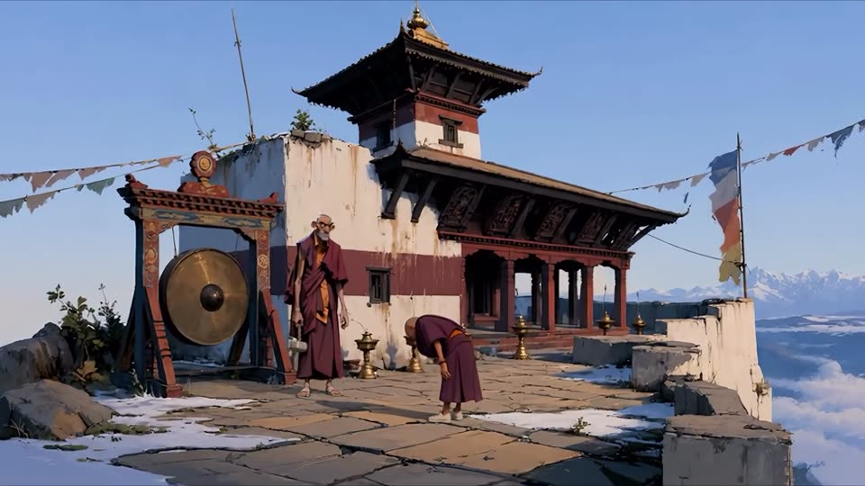
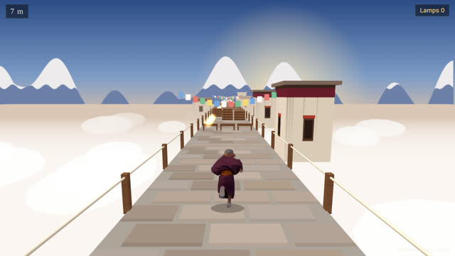

Arkizen Studio animations
Tenzin Games
Browser games starring Tenzin, the young monk.

v1 · Playable
Tenzin Ascent
A four-chapter rooftop platformer: the gong, the monkey thief, pages on the wind and the leap.

v2 · Work in progress
Tenzin Run
An endless runner. Tenzin's run is a looped cut-out of the 3D animation. Change lanes, jump, collect butter lamps.